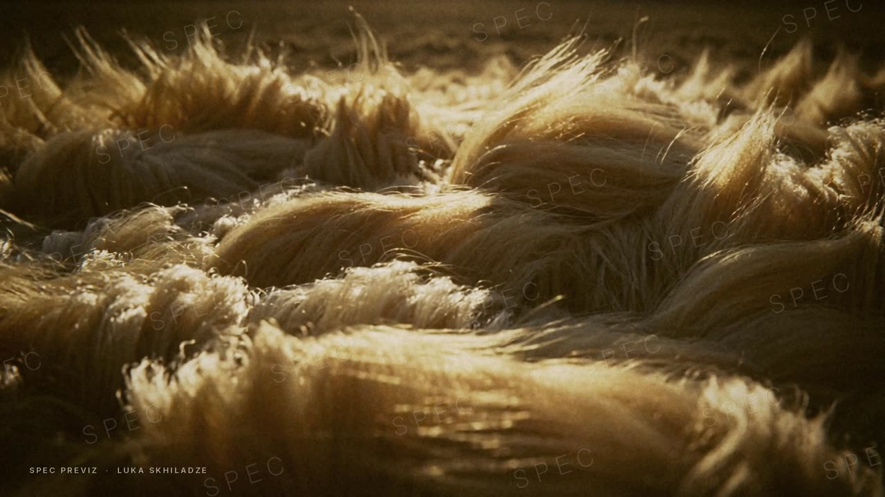
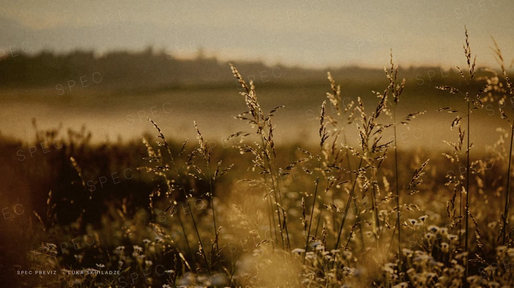
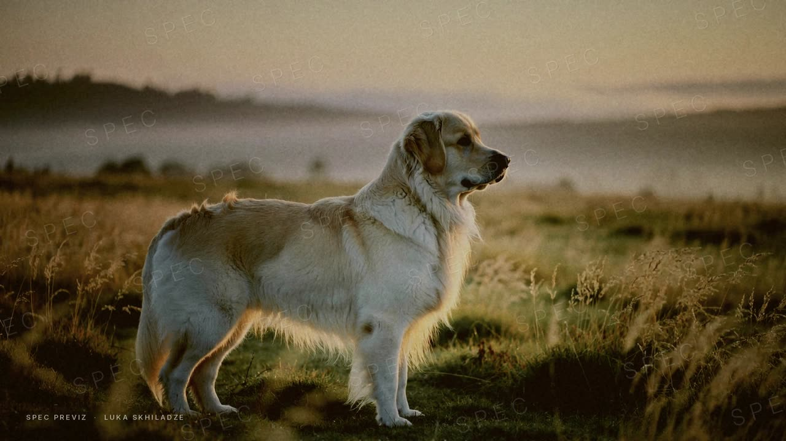
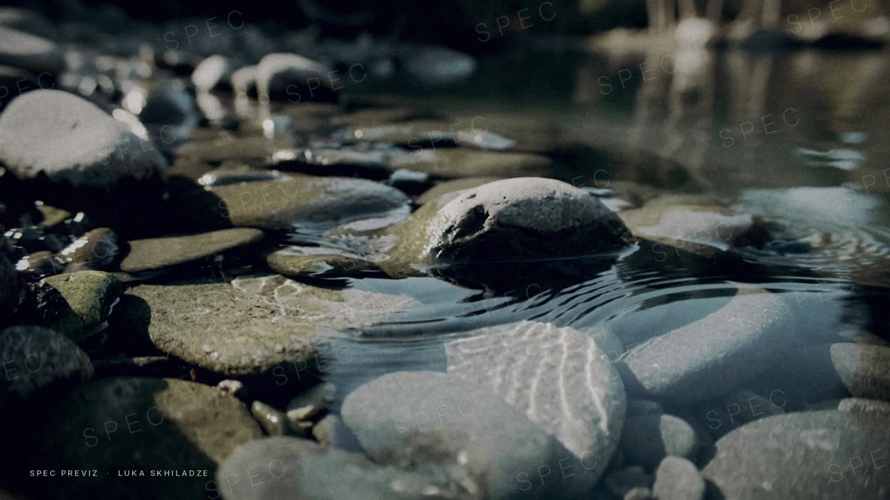
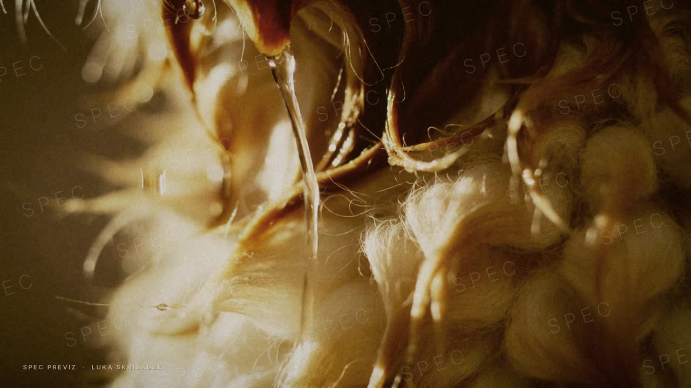
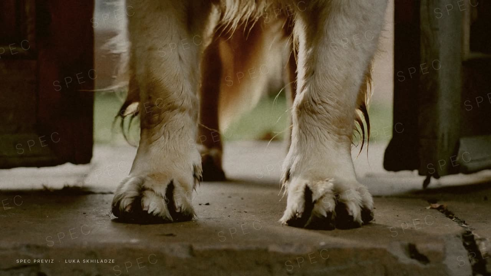
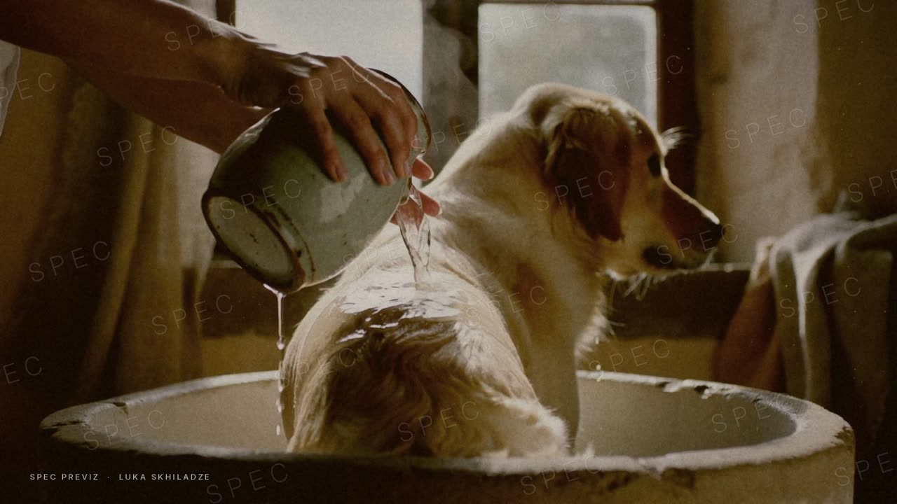
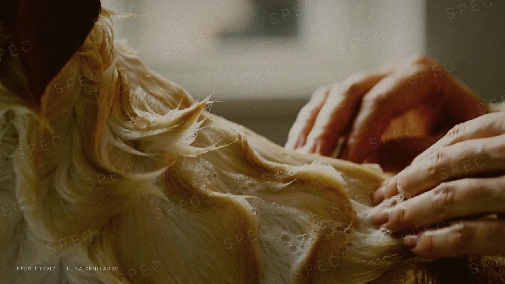
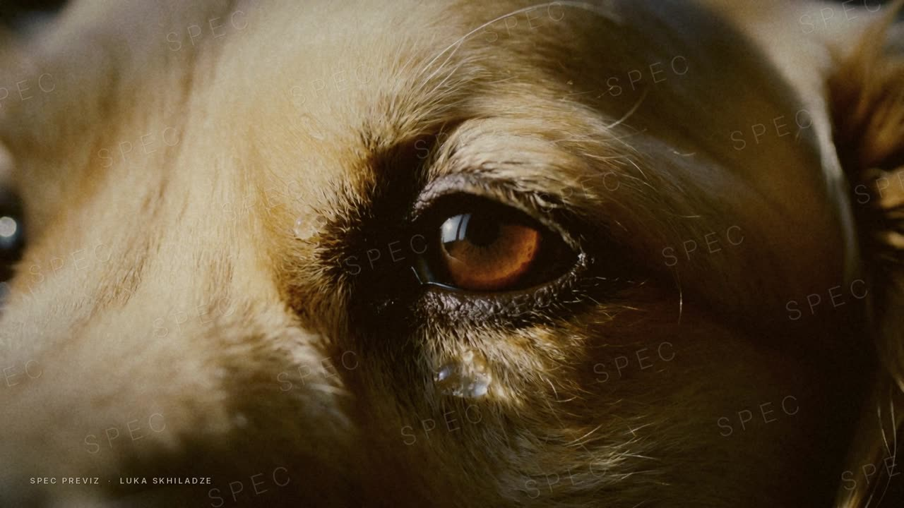

A dog’s coat is a record of where it’s been: the field, the river, the rain, the walk home. Most pet-wash films treat that as dirt to get rid of. This one reads the record slowly, the way a perfume film reads a landscape, and then shows the one ritual that looks after it.
The opening, shot by shot









These pictures are AI previz standing in for the licensed clips listed further down. Each shot maps to a real Filmsupply clip with its ID and price. The finished film is cut only from licensed footage. Edit, colour grade, original score and sound design are mine.
How the full film plays
Out
One long take to open: a slow push through tall grass at first light that ends inside the dog’s coat, so the field and the fur are the same image. Then short, quiet details. Water over stones, water running through the coat, pollen, burrs, mud drying on the legs. Only wind, water and breath on the soundtrack.
The threshold
The door. Muddy paws on cold stone. Warm water from a jug, hands working the wash into a wet coat, steam in window light. The bottle appears for the first time here, wet, on the stone edge of the basin. The piano plays its first note.
Rest
A dry coat in window light. The dog asleep, a hand resting on its side, the field visible through the glass. One held macro of the bottle beside a folded towel. The name.
What I took from CLAY
I broke Perfumer H’s CLAY film down shot by shot. It’s 19 shots in 62 seconds, but the first one is a single 19-second tilt from the soil to the horizon while the notes are read over it. Only after that does it cut quickly, at about 2.3 seconds a shot. Sixteen of the nineteen shots are locked off. The bottle shows up three times as a detail inside the landscape’s colour and gets a real hero shot only in the last ten seconds. Those became the rules for this film:
- Earn the cut. One long opening take, then quick, quiet details.
- Hardly move the camera. It moves three times in the whole film: the opening push, one walk beside the dog, one slow push on the bottle.
- Macro is the wide shot. Fur, water, stone, linen and hands carry the film. Wides are rare and held.
- One palette. Wheat, ochre and umber, with river slate as the only cool colour. Every source is graded into it.
- Shoots, not clips. The dog, the hands and the house come from two or three stock shoots, so it plays as if we filmed it.
- Dignity. No dog looking down the lens, no tongues, no zoomies.
Sound
Sound leads the picture: each scene’s sound starts a few frames before its first image. Close, textural sound does most of the work, with wind in grass, water over stones, water through fur, a paw on stone, the jug, fingers in a wet coat and a slow exhale.
Under it sits a low, continuous bed and a felt piano that plays three notes in the whole film: when the dog appears, at the first touch of warm water, and under the name. There’s a finch in the field at the start, and one again, faintly, through the window at the end.
No narration in the master. If you want words, short on-screen lines carry it, as in the spec, or a single sentence in a founder’s voice at the end. Mixed to −14 LUFS for social, with a −23 LUFS version for broadcast.
Two more ways to look at it
How the bottle gets in
Stock can’t contain your bottle, so it needs a plan. Whichever route you pick, it appears three times, takes about a tenth of the running time and always sits inside the scene (wet stone, steam, linen). No packshot on white until the end card.
Where I’d push back
- 45 seconds rather than 60. Stock films sag in the middle at 60. A tight 45, a 15 and a 6 will do more.
- Plan the 6 and the 15 first. Most people will meet Finch & Wild in a feed, so the first two seconds have to work with the sound off. The master is built around them.
- Film the product and the hands for real. Stock is right for fields, rivers and light. Half a day of real inserts makes the whole film feel authored.
- Earn trust as well as feeling. A fragrance film sells a mood, but a $40 wash also has to be believed. Here the trust comes from the care on screen, the hands and the warm water, rather than smoke and silk.
- The luxury lane is filling up. Jo Malone and WildWash launched a dog shampoo in September with Tom Hardy fronting it. Celebrity and scent are taken. Formulation and intimacy are still open, and they suit a quieter film.
Licences for the opening
Every shot in the spec maps to a clip you can license today. Prices are Filmsupply’s published Web/Social rate. Paid social is quoted separately, and I’d get that quote before we lock the cut. All nine clips list commercial-use releases.
| Shot | Filmsupply clip | Filmmaker | Length | Web/Social | |
|---|---|---|---|---|---|
| Fur that reads as a field | #991555Golden fibres in warm light | Third Witness Studios | 0:04 | $219 | |
| The meadow | #902962Tall grass in soft morning light | Cam MacArthur | 0:09 | $219 | |
| The dog | #923187Golden retriever in a field at sunset | Julien Jarry | 0:05 | $219 | |
| River over stones | #881321Water over rocks in a creek | Jane Qian | 0:05 | $219 | |
| Water through the coat | #654175Dog in a stream, water off the coat | Gioacchino Petronicce | 0:07 | $219 | |
| The doorstep | #913216Mud all over the legs | Quinn Feldman | 0:08 | $219 | |
| Warm water | #154384Water poured over a soapy dog | Niles Heckman | 0:17 | $219 | |
| Hands | #706232Hands working shampoo into fur | Cardboard Spaceship | 0:09 | $219 | |
| Rest | #900507A dog’s eye slowly blinking | Philipp Hafner | 0:03 | $219 | |
| Opening, 9 clips | $1,971 | ||||
The full film runs to about 24 shots. All from Filmsupply, that’s roughly $5,260 for Web/Social plus a paid-media quote. The route I’d suggest is a hybrid: 8–10 hero shots from Filmsupply (about $1,750–2,190) and the landscape and texture inserts from an Artlist Max licence (about $480 a year), which covers client work and paid ads for companies with up to 50 people. Music from Musicbed or Artlist, quoted per track. Watermarked comps are free to cut with, so nothing is bought until you approve the edit.
Hours
You estimated 40 hours. For the full scope I’d plan on 51–56.
| Phase | Hours |
|---|---|
| Brief, treatment, one direction locked | 4 |
| Footage research and shot boards, with alternates | 8 |
| First edit with comps and temp music | 8 |
| Two rounds of edit revisions | 5 |
| Licensing, full-res downloads, conform | 3 |
| Colour grade: match every source, build the look, finish | 6 |
| Music search and edit to picture | 2 |
| Sound design and mix (social and broadcast levels) | 6 |
| Bottle integration (agency plates 3, CG bottle 8) | 3–8 |
| Cutdowns: 16:9 master, 9:16 at 15 and 6 seconds, 4:5 at 15 | 4 |
| Delivery and QC | 2 |
| Total | 51–56 |
Forty hours holds if one direction is approved at the treatment stage, the shot boards are signed off before I cut, there are no more than two revision rounds, your agency supplies the product plates, and the cutdowns are a 9:16 and a 4:5 at 15 seconds.